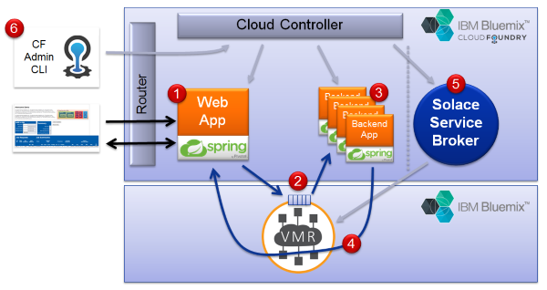

Horizontal Scaling of Aggregated Microservices
Using Solace Messaging in Cloud Foundry

You can see the project README for more details. The goal of this demo is to illustrate the Aggregator Microservice Design Pattern using an event driven architecture with messaging to communicate between Microservices, specifically Solace Messaging in Pivotal Cloud Foundry.
Here are some interesting links if you're new to these concepts:
This demo is composed of the following parts:
- A RESTful Web Application receives incoming requests. In this demo, the job requests are number of work units, rate, and delay characteristics.
- The work requests are sent to a non-exclusive queue in the Solace Messaging Service.
- The worker applications process messages from the Solace queue. The application can be horizontally scaled using Cloud Foundry to increase the overall processing throughput of the system.
- When a Worker is done with a work request, it sends the response. For the purposes of this demo, the Aggregator Application
tracks and displays status of each job in the summary table below.
- The Aggregator Application and Worker Applications depend on a Solace Messaging Service for Cloud Foundry.
- All of the apps are pushed to Cloud Foundry through the CLI or Pivotal Apps Manager.